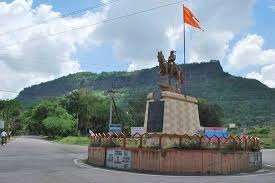
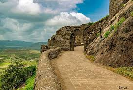
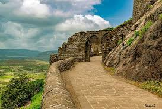

 

shivnari
shivnari fort
Shivneri Fort is an ancient military fortification located near Junnar in Pune district in Maharashtra, India. It is the birthplace of Chhatrapati Shivaji Maharaj, the founder of the Maratha Empire. The fort is situated on a hilltop that overlooks the Junnar city. It is a triangular-shaped fort with seven well-defended gates. The fort is surrounded by steep cliffs on all sides, making it difficult to attack. There are many water tanks and wells within the fort complex, which provided a steady supply of water to the fort’s inhabitants.
History of Shivneri Fort
The history of Shivneri Fort dates back to the 6th century. It was initially ruled by the Mauryas, and later by the Chalukyas, Rashtrakutas, and Yadavas. In the 13th century, the fort came under the control of the Delhi Sultanate. In 1430, the fort was captured by the Adil Shahi dynasty of Bijapur. In 1630, the fort was captured by the Mughal Empire. In 1674, the fort was captured by Chhatrapati Shivaji Maharaj.
Significance of Shivneri Fort
Shivneri Fort is a significant historical landmark in India. It is the birthplace of Chhatrapati Shivaji Maharaj, a great warrior and founder of the Maratha Empire. The fort is also a symbol of Maratha pride and resistance against foreign rule.
Places to See in Shivneri Fort
The Birthplace of Chhatrapati Shivaji Maharaj: This is the most important place to see in Shivneri Fort. It is a small room where Shivaji was born. The room is adorned with statues of Shivaji and his mother, Jijabai.
The Birthplace of Chhatrapati Shivaji Maharaj: This is the most important place to see in Shivneri Fort. It is a small room where Shivaji was born. The room is adorned with statues of Shivaji and his mother, Jijabai.
The Chain Gate: This is a secret entrance to the fort. It is said that Shivaji used to use this gate to enter the fort during his childhood.
The Execution Point: This is a place where prisoners were executed. It is located at the edge of the fort, overlooking the valley below.
Best Time to Visit Shivneri Fort
The best time to visit Shivneri Fort is from October to March. During these months, the weather is pleasant and there is less rainfall.